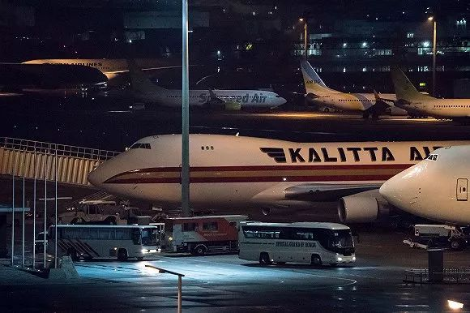
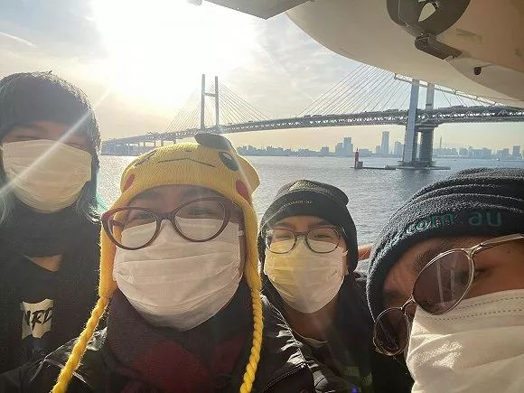

法医刘良详述尸检经过，预计10天内出结论
原文链接 备份链接 澎湃新闻 综合报道 2月16日，武汉。在法律政策允许下，两例新冠逝者遗体解剖工作在金银潭医院完成，由解剖获得的新冠肺炎病理，目前已被送检。 澎湃新闻记者 祝文博 编辑 张兆亿 视频来源 相关人士 责任编辑：周宽玮 据参 …
 “钻石公主号”。图片来源：推特
“钻石公主号”。图片来源：推特
记者：刘芳
“
福西在CBS节目《Face The Nation》上表示：“这艘游轮就像个病毒热点（Hot Spot）一样，传染力实在太强了。”
”
在日本横滨大黑码头被困近两周后，“钻石公主”号邮轮上的上千外国公民正被陆续撤离。面对新冠肺炎带来的挑战，美国国务卿蓬佩奥周一（2月17日）表示，将不惜一切代价降低新冠肺炎对公众带来的风险。
2月17日凌晨，尾号为N716CK和N710CK的两架美国包机分别于4点56分和2点28成功降落美国本土。在这两架747专机上载有300余名自愿从“钻石公主”号撤离的美国乘客和他们的家人。
正如美国防部早前透露的那样，他们将被在加州的特拉维斯空军基地（Travis Air Force Base）和德州的拉克兰空军基地（Lackland Air Force Base）进行为期14天的强制隔离。
不过，回家的路并非一帆风顺。在东京羽田机场（Haneda Airport）登机途中，美方突然接到日方通知称，有14名已经撤离的美国公民在两天前进行的检测中被确诊感染新冠肺炎。在这种情况下，美国国务院依然决定让这14名病例和其他乘客一起登机，并在机上将14名乘客进行隔离。

2月16日，从游轮上接走美国乘客的大巴。来源：推特
除此之外，在2月16日之前得到确诊结果的40多名美国游客也被滞留日本当地。美国国家过敏症与传染病研究所（NIAID）主任福西（Anthony Fauci）在接受CBS采访时表示：“他们不会去任何地方，他们将待在日本的医院里。”
“钻石公主”号于1月20日从横滨出发，并于2月3日提前返回横滨。由于一名1月25日在中国香港下船的80岁男性在2月1日被确诊，这艘邮轮在提前返回后从2月5日起进入两周隔离状态，2666名宾客和1045名船员在2月19日前不得下船。
截至2月16日，邮轮上已检出356名确诊病例，其中至少60人为美国公民。而据日本厚生劳动省2月17日傍晚最新消息，邮轮17日新增确诊99人感染新型冠状病毒，其中70人无症状。

2月16日，在东京羽田机场负责撤离美国乘客的其中一架包机。来源：CNN
对于邮轮上为何有如此多人同时感染，福西于16日在CBS节目《Face The Nation》上表示：“这艘船就像个病毒热点（Hot Spot）一样，传染力实在太强了。”
虽然美国是首个从“钻石公主”号上撤离本国公民的国家，但很多美国乘客依然对被困经历感到愤怒。
美国乘客史密斯（Matthew Smith）在推特上写道：“美国政府想在没有检测的情况下把我们带走，和其他一群未经测试的人一起空运回美国，然后再把我们隔离两周？这有什么意义呢？”从推特上来看，史密斯选择了留下，而不是和其他人一样乘坐专机抵达空军基地继续隔离。
除了邮轮上的乘客以外，公共卫生专家们也对日本政府隔离整船人员的政策提出了质疑。贝勒医学院的霍特兹（Peter Hotez）说：“我不明白为什么要把乘客困在船上，我认为（他们）采用了14世纪的方法和道德规范来治疗传染病患者。”
继美国乘客顺利撤离之后，加拿大、澳大利亚和印度也相继决定派专机从“钻石公主”号上撤离本国公民。

被困“钻石公主号”上的澳大利亚公民Aun Na Tan一家。来源：SBS
澳大利亚总理莫里森宣布将派澳航（Quantas）把船上200余名澳大利亚公民撤离到达尔文，并在那里进行14天的强制隔离。莫里森说：“现在我明白，船上的人和他们的家人都感到非常沮丧。”但他同时强调，保护澳大利亚本土公民的健康和安全是头等大事。
据悉，澳大利亚国家安全委员会是在听取了首席卫生官墨菲（Brendan Murphy）教授的建议后才决定向船上的人提供援助的。截至16日，邮轮上共有24名澳大利亚公民被确诊感染新冠肺炎。
16日，加拿大外交部长商鹏飞（Francois-Philippe Chample）在一份声明中表示：“鉴于‘钻石公主’号上加拿大公民面临的特殊情况，我们正采取行动将加拿大人从日本撤离回，同时确保采取适当措施防止和限制新型冠状病毒的传播。”
与美国和澳大利亚的政策相同，那些已经被确诊感染新冠肺炎或在登机筛查时表现出新冠肺炎症状的加拿大乘客将在日本接受治疗。

美国国家过敏症与传染病研究所（NIAID）公布的扫描电子显微镜下细胞（粉色、蓝色） 和新冠病毒（黄色）图像。来源：NIAID
在病毒研究方面，美国国立卫生研究院（NIH）下属的国家过敏症与传染病研究所（NIAID）于13日公布了新型冠状病毒的电镜图像。
NIAID称，冠状病毒在电子显微镜下呈球状或椭圆形，病毒上有规则排列的突起，形似皇冠而得名冠状病毒。病毒名称 Corona 则出自拉丁语，意为“王冠”。
虽然新型冠状病毒的图像愈发清晰，但到目前为止美国科学家均认为他们对这个病毒的特性所知甚少。NIAID主任福西在16日的采访中表示，就流感病毒的周期性来看，认为天气转暖会有使疫情逐渐缓解是非常合理的推测。但是福西认为，目前科学家们对新型冠状病毒之后的发展趋势仍一无所知。
福西还强调，在一年内成功研发和生产新冠肺炎的疫苗已经是最短的时间，不能再短了。如果声称可以在更短的时间研发和生产疫苗的话就有偷工减料和走捷径的嫌疑。
对于新冠肺炎带来的公共安全风险挑战，美国务卿蓬佩奥在周日的记者会上表示：“我认为我们都需要意识到新型冠状病毒威胁的严重性。”他同时强调，美国将“不惜一切代价”降低新冠肺炎对公众带来的风险。

原文链接 备份链接 澎湃新闻 综合报道 2月16日，武汉。在法律政策允许下，两例新冠逝者遗体解剖工作在金银潭医院完成，由解剖获得的新冠肺炎病理，目前已被送检。 澎湃新闻记者 祝文博 编辑 张兆亿 视频来源 相关人士 责任编辑：周宽玮 据参 …
原文链接 备份链接 实习记者 | 袁 颖 编辑 | 许诗雨 疫情让人们了解到了医疗资源的可贵。保护医务人员和医学技术领域的人才就是保护其他人的生命。然而，医务人员的职业特殊性也意味着他们受到感染的风险也更高。 2月14日下午，在国务院举 …
原文链接 备份链接 记者：余瑾毅、通讯员薛源本文来源：湖北日报 “ 因新冠肺炎导致呼吸衰竭，在“鬼门关”走了一遭的1岁男童牛牛（化名），经武汉儿童医院重症医学科全力救治保住性命，2月13日，家人将已确认符合出院标准的他接回家继续隔离观察。 …
原文链接 备份链接 澎湃新闻记者 宋江云 2月12日晚，九江学院附属医院官方微信公号消息，2月11日，九江学院附属医院新确诊一例特殊的新型冠状病毒肺炎病例。该病例无发热症状，隐匿性强，在确诊前曾三次核酸检测均呈阴性，第四次核酸阳性方最终确 …
原文链接 备份链接 司机停下车来思忖着说，怎么给导到这里来了？ 那是一条土路，树在旁边矗立着。春天还没到来，它的叶子还没长出来。 “前方800米左转，500米后再左转”，导航里的声音软糯着。 金银潭医院是此次行程的目的地。这是武汉市最大的 …